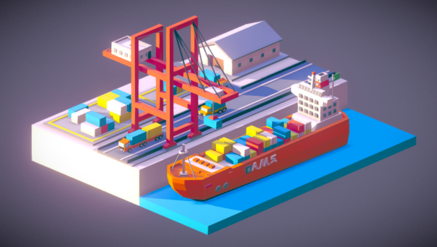

De game
De game speelt zich in de haven van Porterdam. Helaas gaat het niet goed met de haven, er zijn grote achterstanden. Boten liggen bijvoorbeeld al weken voor de haven, containers worden niet op de juiste vrachtwagen gezet of op de juiste boot om vervoerd te worden. Het is aan jou om alles weer in goede banen te leiden, daarom ben je gekozen tot havenmanager. Jouw taak? Zorg dat de haven weer wordt zoals die was, of zelfs nog beter! Voltooi opdrachten en verdien punten, waardoor je vervolgens nieuwe en verbeterde materialen, machines, etc. kan kopen. Zorg jij dat jouw haven als hoogste in de ranglijst komt te staan?
Regels
Om verder te komen in het spel moet je plekken en machines unlocken, deze kun je unlocken wanneer je stijgt in level. Ook moet je om je haven uit te breiden eerst verschillende soorten doelstellingen hebben gehaald.
Rewards
Wanneer een speler opdrachten voltooid of mijlpalen behaald, krijgt die een beloning. Deze beloning is een hamer, met hamers kan een speler de reparatieduur van een machine of iets anders versnellen. Ook kan met de hamer speciale machines worden gekocht en kan de haven worden aangepast naar wat de speler wilt.